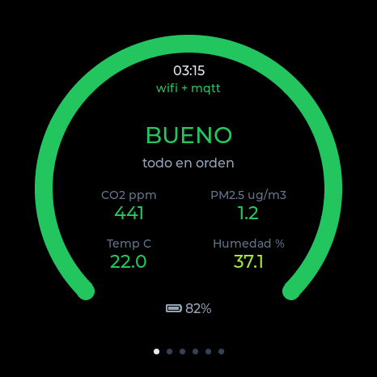
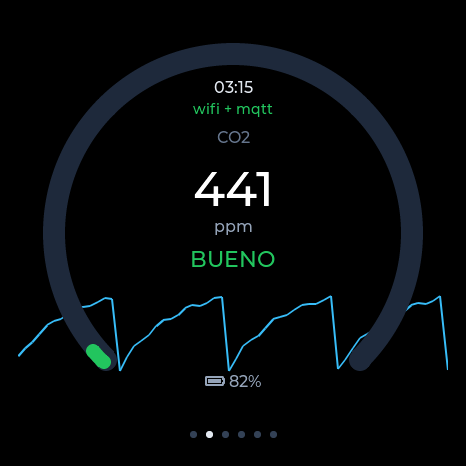
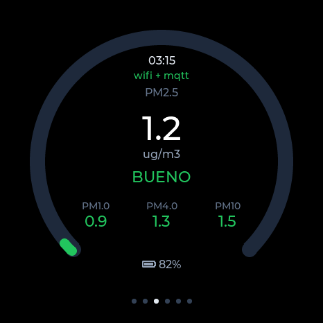
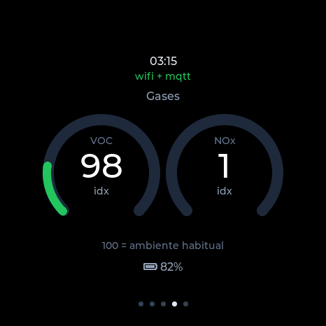
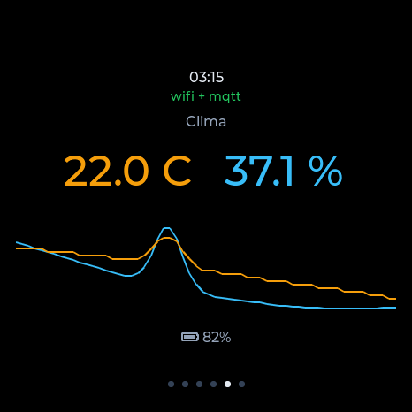
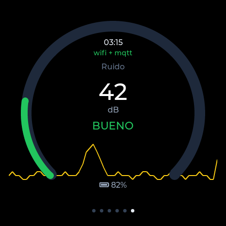
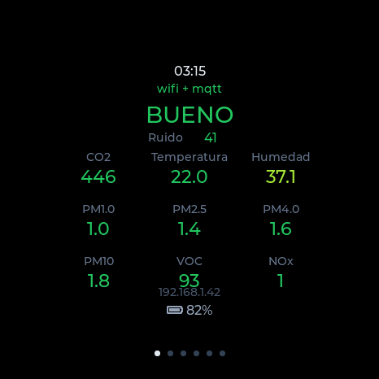

SEN66 · ESP32-S3
Un medidor de calidad del aire para tener encima de la mesa. Lleva un Sensirion SEN66, que mide nueve cosas a la vez, y una pantalla redonda de 466 píxeles donde se leen sin acercarse.
An air quality meter to sit on your desk. It uses a Sensirion SEN66, which measures nine things at once, and a 466-pixel round display you can read from across the room.
Habla con Home Assistant y con HomeKit, pero no depende de ninguno de los dos: si se cae la red, la pantalla sigue midiendo. No manda nada fuera de tu casa.
La carcasa se imprime en casa: está publicada gratis en MakerWorld.
It talks to Home Assistant and HomeKit, but depends on neither: if the network goes down, the display keeps measuring. Nothing leaves your house.
The case prints at home: it's free on MakerWorld.

El SEN66 es un módulo de Sensirion que junta varios sensores en una caja del tamaño de una cerilla grande, con su propio ventilador para hacer pasar el aire:
The SEN66 packs several sensors into one box the size of a large matchbox, with its own fan to pull air through:
| CO₂ | en ppm. El dato que dice cuándo abrir la ventana.in ppm. The number that tells you to open a window. |
| PM1 · PM2.5 PM4 · PM10 | partículas en suspensión, en µg/m³. Las de 2,5 son las que importan para la salud.particulate matter in µg/m³. The 2.5 fraction is the one that matters for health. |
| VOC · NOx | índices de compuestos volátiles y óxidos de nitrógeno. No son medidas absolutas: el sensor aprende tu ambiente y compara.volatile compound and nitrogen oxide indices. Not absolute readings: the sensor learns your baseline and compares. |
| °C · %RH | temperatura y humedad relativa.temperature and relative humidity. |
Seis páginas que se pasan con el dedo. Cuando dejas de tocarla se apaga sola, y al volver a tocarla aparece donde la dejaste. Si la dejas quieta un rato muestra un resumen con todas las magnitudes y la direccion de su panel web.
Six pages you swipe through. When you stop touching it the screen turns itself off, and comes back exactly where you left it. Left alone for a while it shows a summary with every reading and the address of its web panel.

CO₂

PartículasParticulates

GasesGases

ClimaClimate

RuidoNoise

ReposoIdle
| Waveshare ESP32-S3-Touch- AMOLED-1.75 | La placa, con la pantalla redonda ya montada.The board, round display included. |
| Sensirion SEN66 | El sensor. Trae su cable.The sensor. Comes with its cable. |
| 4 cables4 wires | 3V3, GND, SDA→IO17, SCL→IO18 |
| 3 tornillos3 screws | M2 × 6 mm |
| USB-C | Alimentación. Opcionalmente una batería LiPo y un altavoz.Power. Optionally a LiPo battery and a speaker. |
| La carcasaThe case | AirRing, gratis en MakerWorld, free on MakerWorld |
Antes de conectar nada: el SEN66 funciona a 3,3 V y en ese conector, a dos pines de distancia, hay 5 V. Y comparte dirección I2C con el acelerómetro que la placa lleva soldado, así que va en un bus aparte. Todo está explicado en el esquema de cableado.
Before connecting anything: the SEN66 runs at 3.3 V and there's 5 V two pins away on that header. It also shares its I2C address with the accelerometer soldered to the board, so it goes on a separate bus. It's all in the wiring guide.
La forma rápida es desde el navegador: conectas la placa por USB y le das a un botón, sin instalar nada. Necesita Chrome o Edge en un ordenador.
The quick way is straight from your browser: plug the board in over USB and press a button, nothing to install. Needs Chrome or Edge on a computer.
Si prefieres compilarlo, hace falta ESP-IDF 5.3 o posterior.
If you'd rather build it, you'll need ESP-IDF 5.3 or newer.
git clone https://github.com/socquique/Monitor-SEN66 cd Monitor-SEN66 idf.py build idf.py -p /dev/ttyUSB0 flash monitor
La primera vez abre un punto de acceso propio; te conectas, le dices cuál es tu WiFi y ya está. A partir de ahí se actualiza por la red.
The first time it opens its own access point; you connect, tell it your WiFi, and that's it. From then on it updates over the network.
Hay también un simulador de escritorio que ejecuta la misma interfaz sobre SDL2. Las capturas de esta página salen de ahí: es literalmente el mismo código que corre en la placa.
There's also a desktop simulator running the same UI on SDL2. The screenshots on this page come from it — it's literally the same code that runs on the board.